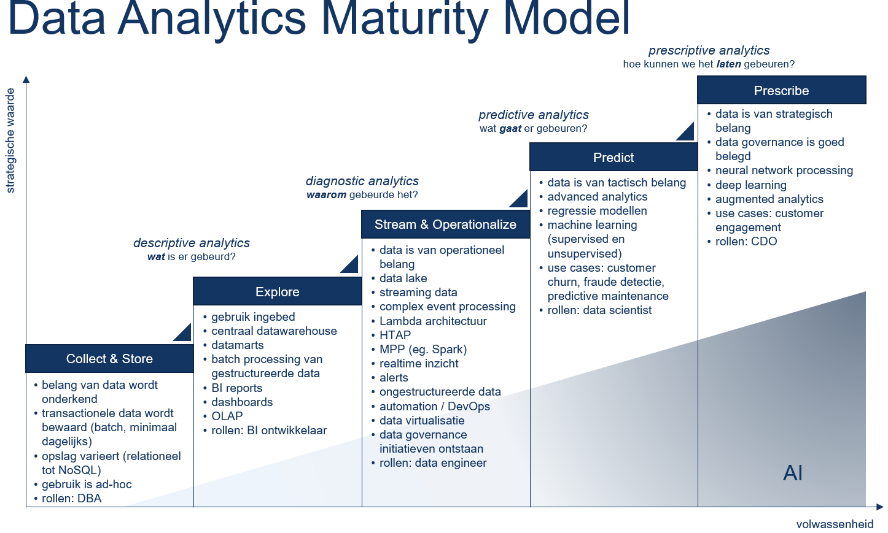

Expertiseteam Digital/Data
Missie / Visie
Het werkveld heeft behoefte aan professionals die de kansen op het gebied van digitalisering en technologische transformaties van morgen mede kunnen vormgeven. En die ook de risico’s, bijvoorbeeld op het gebied van wet- en regelgeving of ethische dilemma’s, doorzien. Professionals – ook binnen de HAN – moeten daarom niet alleen vertrouwd zijn met wat er nu op digitaal en technologisch gebied voor handen is. Ze moeten ook nieuwsgierig zijn naar toekomstige ontwikkelingen en mogelijkheden zodat ze een bijdrage kunnen leveren aan het benutten van kansen.
Om kansen op het gebied van digitalisering te kunnen omzetten naar daadwerkelijk gerealiseerde waarde, dienen organisaties intern te beschikken over een aantal zogenaamde dynamische vermogens.
![Dynamisch vermogens voor digitale transformatie [@warner_building_2019]](digitalcapabilities.jpg)
Digital sensing: het kunnen herkennen van relevante exponentiele digital technologieën.
Digital seizing: het kunnen experimenteren met en testen en afwegen van interessante digitale technologieën.
Digital transforming: het kunnen herpositioneren en structuren van de eigen organisatie en haar netwerken.
Voor de optimale ontplooiing van bovenstaande dynamische vermogens dienen een aantal faciliteiten te worden ingericht: (a) cross functionele teams, (b) snelle besluitvorming en (c) management support. Faalfactoren zijn : (a) rigide strategische planningen, (b) lage veranderbereidheid en (c) hoge mate van hierarchie. Uiteindelijk zal de digitale transformatie leiden tot een strategische verandering in het business model, de interne en externe samenwerking en de organisatiecultuur (Warner and Wäger 2019).
HAN Bedrijfskundigen helpen organisaties bij het ontplooien van de dynamische vermogens die nodig zijn om de kansen en beloftes van digitalisering te realiseren.
Strategie
Eind 2027 beschikken studenten en medewerkers over vaardigheden om de kansen op het gebied van digitalisering en technologische transformaties mede te kunnen vormgeven. Tegelijkertijd doorzien zij ook de risico’s, bijvoorbeeld op het gebied van wet- en regelgeving of op het gebied van ethische dilemma’s.
